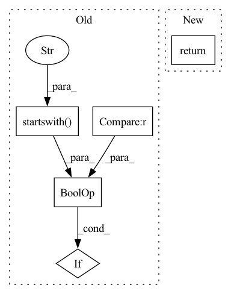

Pattern ID :4059

Before Change
out = dict()
for key in dir(obj):
val = getattr(obj, key)
if (key.startswith("__") and key.endswith("__")) or type(val).__name__ == "method":
continue
else:
out[key] = val
After Change
:param obj:
:return:
return get_obj_variables(obj)
def update_obj_params(obj_instance: object, args: Union[dict, Namespace]):
In pattern: SUPERPATTERN
Frequency: 3
Non-data size: 5
Instances
Fragment ID: 15119860
Project Name: pooya-mohammadi/deep_utils
Commit Name: 6cac235e5971e569ed7980573e36236f60cd5490
Time: 2022-07-20
Author: pooyamohammadikazaj@gmail.com
File Name: deep_utils/utils/object_utils/object_utils.py
M Class Name: AnonimousClass
N Class Name: AnonimousClass
M Method Name: get_attributes(1)
N Method Name: get_attributes(1)
M Parent Class:
N Parent Class:
M File Name: deep_utils/utils/object_utils/object_utils.py
N File Name: deep_utils/utils/object_utils/object_utils.py
M Start Line: 11
M End Line: 18
N Start Line: 28
N End Line: 28
'>
Before Change
Returns:
True if this config is for a local component, False otherwise.
if (
self.kubernetes_context is None
or self.kubernetes_context.startswith("k3d-zenml-kubeflow-")
):
return True
return False
After Change
Returns:
True if this config is for a local component, False otherwise.
return self.local
class KubeflowOrchestratorFlavor(BaseOrchestratorFlavor):
'>
Fragment ID: 15119861
Project Name: maiot-io/zenml
Commit Name: 7c2cc75cc82e8c5e3f56eedcbc078b82d313e366
Time: 2023-02-03
Author: 34200873+safoinme@users.noreply.github.com
File Name: src/zenml/integrations/kubeflow/flavors/kubeflow_orchestrator_flavor.py
M Class Name: KubeflowOrchestratorConfig
N Class Name: KubeflowOrchestratorConfig
M Method Name: is_local(1)
N Method Name: is_local(1)
M Parent Class: KubeflowOrchestratorSettings,BaseOrchestratorConfig
N Parent Class: KubeflowOrchestratorSettings,BaseOrchestratorConfig
M File Name: src/zenml/integrations/kubeflow/flavors/kubeflow_orchestrator_flavor.py
N File Name: src/zenml/integrations/kubeflow/flavors/kubeflow_orchestrator_flavor.py
M Start Line: 224
M End Line: 229
N Start Line: 282
N End Line: 282
'>
Before Change
def validate_source_datasets(sources: Union[List[str], Dict[str, List[str]]]) -> ValidatorOutput:
invalid_values = []
for src in sources:
is_ok = src in ["original", "extended"] or src.startswith("extended|")
if not is_ok:
invalid_values.append(src)
if len(invalid_values) > 0:
return (
After Change
@staticmethod
def validate_source_datasets(sources: Union[List[str], Dict[str, List[str]]]) -> ValidatorOutput:
return tagset_validator(sources, known_source_datasets, "source_datasets", known_source_datasets_url)
@staticmethod
def validate_paperswithcode_id_errors(paperswithcode_id: Optional[str]) -> ValidatorOutput:
'>
Fragment ID: 15119859
Project Name: huggingface/datasets
Commit Name: 0ef4e2cde22fb6fca3c3c520726575b10c37967d
Time: 2021-12-02
Author: 8515462+albertvillanova@users.noreply.github.com
File Name: src/datasets/utils/metadata.py
M Class Name: DatasetMetadata
N Class Name: DatasetMetadata
M Method Name: validate_source_datasets(1)
N Method Name: validate_source_datasets(1)
M Parent Class:
N Parent Class:
M File Name: src/datasets/utils/metadata.py
N File Name: src/datasets/utils/metadata.py
M Start Line: 344
M End Line: 355
N Start Line: 347
N End Line: 347